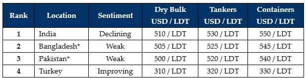

inWeekly Demolition Reports13/11/2023

Markets remain precariously poised as Diwali holidays are finally upon the sub-continent markets and theindustry heads into the final months of the 2023. Although several sales have reportedly registered into India at some impressive levels, sentiments and pricing here remains muted overall.
On the Eastern end and in the lead up to the Bangladeshi elections due in mid-January 2024 – disruptions, protests, and even strikes have embattled the country and as such, it is expected to become even more challenging to get L/Cs open & deliveries completed into Chattogram, especially as the ongoing unrest persists.
Meanwhile, after another period on the sidelines, Pakistan is starting to see some buying interest reemerge, as the currency continues to depreciate once again; in that, as vessels get increasingly expensive, local steel plate prices would eventually have to firm in order to keep local business viable, and this is perhaps lending Local Recyclers some forward-thinking encouragement on potentially selling their product at workable levels in the near future / 2024.
Lastly, the Turkish market reports even more improvements as both local and import steel prices registered improvements this week, with even price indications seeming to firm about by about USD 10/MT.
Overall, with global steel prices now gaining some decent ground over the preceding weeks (including Turkey and notably even in China this week), there is the lingering hope that these improvements could filter through to the other recycling markets in the weeks ahead, especially upon the conclusion of Diwali holidays. And amidst the shaky hopes that markets do indeed rise to higher levels, there certainly were a handful of Cash Buyers who continue to be gambling on vessels with a forward delivery, all while prompt vessels are facing comparative discounts to those with a longer / forward laycan.
Finally, in terms of supply – vintage Containers and Dry Bulk vessels continue to dominate the recycling lanes, but are still missing the volumes that many had expected, especially as charter rates and secondhand values are yet to sink and compel Ship Owner’s to recycle their units.
For week 45 of 2023, GMS demo rankings / pricing for the week are as below.

📄 Download PDF: Ship-recycling-market-insight-week-45-2023-Yet-To-Match-Up.pdfSource: GMS,Inc. ,https://www.gmsinc.net/gms_new/index.php/web